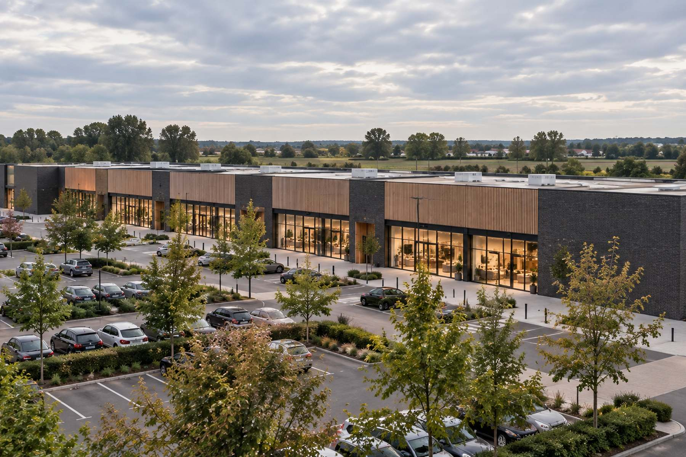
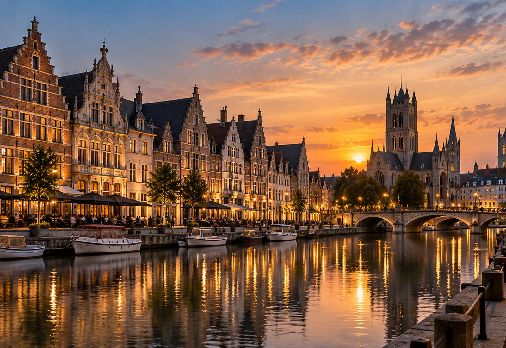

Vastgoed.
Voor generaties.
Voor generaties.
Plekken met
blijvende waarde.
Blackoak Capital
Scroll om te ontdekken
Real estate. Long term value.
Wij bouwen geen portefeuille voor morgen, maar plekken die generaties lang waarde blijven toevoegen.

01 — Residential
Wonen begint
met een plek.
Leefomgevingen met toekomst
Residential →
02 — Commercial
Sterke locaties.
Blijvende waarde.
Essentiële locaties in het dagelijkse leven
Commercial →Blackoak in cijfers
Geduld is onze
grootste troef.
Blackoak Capital is een Belgische vastgoedholding. We investeren selectief in residentieel en commercieel vastgoed, met een horizon die verder reikt dan één cyclus.
2015
Opgericht
België
Thuismarkt
2
Residential Commercial
Est. 2015 · België
Vastgoed.
Voor generaties.
Een locatie met potentie?
Laten we praten.
Wij zijn steeds geïnteresseerd in gronden, gebouwen en vastgoedopportuniteiten in België.
